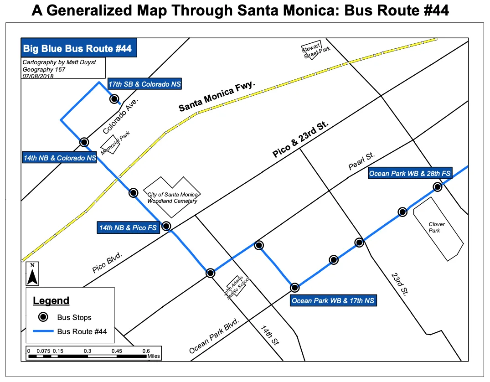

UCLA coursework, 2014 to 2018
Re-Designing LA's Bus Routes: Big Blue Bus #44

This generalized map of Santa Monica’s 'Big Blue Bus' transit route #44 was created through two basic functions: Arctoolbox’s draw function and the employment of point/line symbology. The points (bus stops) were obtained online; a query builder was performed to isolate the required stops/destinations along route #44. In total, there were 11 bus stops in-between the origin and destination points. These points were given a bold circular symbology to denote each stop. In addition, ‘callouts’ were created with the draw feature to label the bus stops in a way that was physically pleasing to the viewer's eye, but doesn’t obstract the bus route. The same process was employed to create the physical bus route between each stop location — the route data was obtained online, and then a query builder was performed to generalize bus #44’s route in its entirety. The use of an ESRI Basemap was essential for deducing the accuracy behind this generalized map; the Basemap allowed for a visualization of acute discretions between each bus stop.

This second generalized map is one less reliant on the view of a Basemap: a map that relies on the accuracy of various accentuated locations throughout Santa Monica. However, the creation of this customized map was achieved through toggling on-and-off of an ESRI Basemap to allow for the most minute details. Key features drawn on the map (Santa Monica Freeway, Stewart Street Park, Memorial Park, John Adams Middle School, and Clover Park), were carefully traced over a Basemap - like georeferencing but without the need of a jpg image. The symbology for bus locations and Bus Route #44 were not altered in this second map. This map relied much more heavily on the draw functionality than the previous map, as the created structures listed above essentially symbolize the viewer’s sense of awareness in Santa Monica. The Santa Monica Freeway is represented by bold yellow and dashed lines, because (as always).. Go Bruins!!